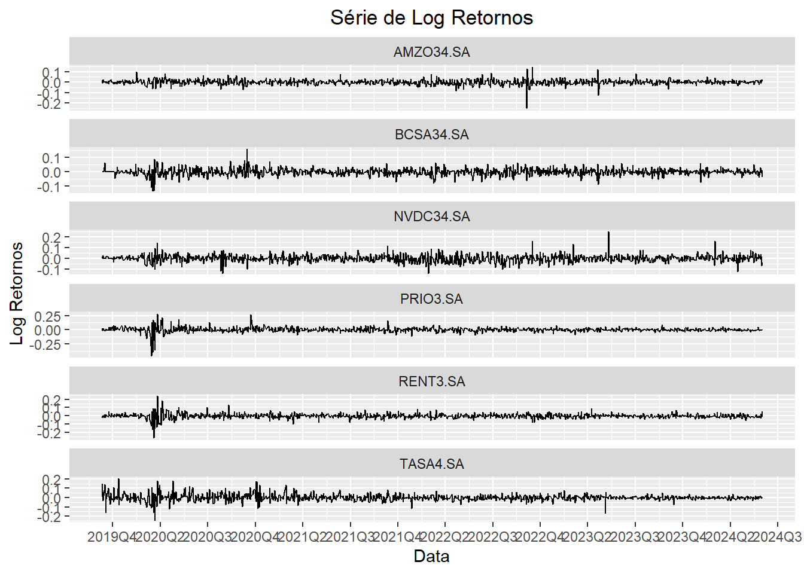
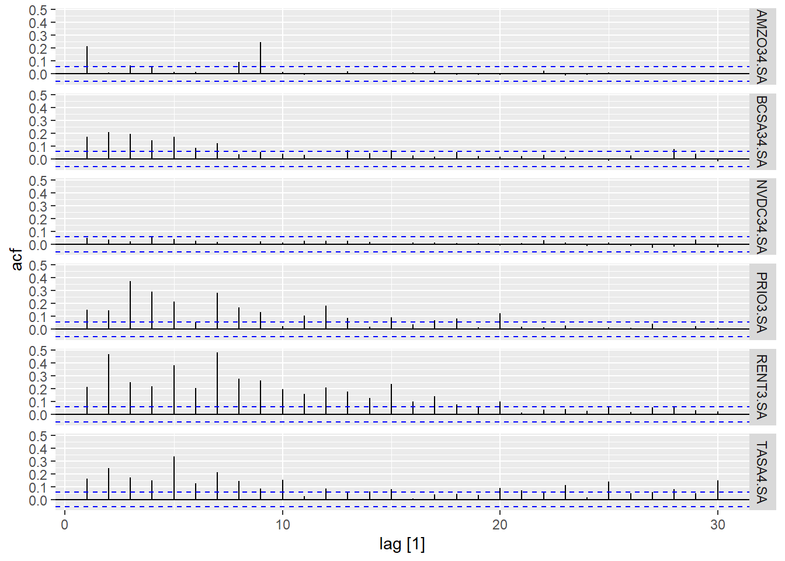

Code
library(ggplot2)
library(fpp3)
library(rugarch)
library(tsibble)
library(yfR)
library(zoo)
library(xts)
library(lubridate)
library(patchwork)
library(lmtest)
library(fGarch)library(ggplot2)
library(fpp3)
library(rugarch)
library(tsibble)
library(yfR)
library(zoo)
library(xts)
library(lubridate)
library(patchwork)
library(lmtest)
library(fGarch)Seleção das Ações/Ativos e data de ínicio da série Escolhemos ínicio de 2022 para escapar dos impactos da pandemia
start_date <- '2021-06-01'
ativos <- c(
"NVDC34.SA",
"BCSA34.SA",
"AMZO34.SA",
"RENT3.SA",
"PRIO3.SA",
"TASA4.SA"
)Selecionando ações e transformando dataframe em tsbible
da <- yfR::yf_get(
ativos,
first_date = start_date,
last_date = Sys.Date(),
bench_ticker = "^BVSP",
type_return = "log",
freq_data = "daily",
do_complete_data = TRUE
)
da_tsibble <- da |>
as_tsibble(key = ticker, index = ref_date, regular = FALSE)#Função para formatar legenda
quarter_label <- function(x) {
paste0(year(x), "Q", quarter(x))
}#criando gráfico da série de preços
da_tsibble |>
autoplot(price_adjusted, colour = "black") +
facet_wrap(~ticker, scales = "free_y", ncol = 1)+
scale_x_date(date_breaks = "3 months", label=quarter_label) +
labs ( title = "Série de Preço", y = "Preço", x = "Data") +
theme(plot.title = element_text(hjust = 0.5))
#criando gráfico da série de retornos
da_tsibble |>
autoplot(ret_adjusted_prices, colour = "black") +
facet_wrap(~ticker, scales = "free_y", ncol = 1) +
scale_x_date(date_breaks = "3 months", labels = quarter_label) +
labs ( title = "Série de Log Retornos", y = "Log Retornos", x = "Data") +
theme(plot.title = element_text(hjust = 0.5))
Faremos a transformação da variável de retorno em retorno quadrático, que será a proxi da volatividade dos retornos.
da_tsibble |>
dplyr::mutate(ret2 = ret_closing_prices^2) |>
autoplot(ret2, colour = "black") +
facet_wrap(~ticker, ncol = 1)
Com a proxi da volatividade, verificaremos a existência de heterodasticidade condicional através dos seguintes métodos:
1.2.1. ACF dos retornos quadráticos
1.2.2. Teste Ljung-Box dos retornos quadráticos
# Gerando variável dos retornos quadráticos
da_tsibble <- da_tsibble |>
dplyr::mutate(ret2 = ret_closing_prices^2)da_tsibble |>
ACF(ret2) |>
autoplot()
resultados <- data.frame(empresa = character(), p_value = numeric())
for (empresa in ativos) {
# Filtrar o dataframe para a empresa atual
da_tsibble_filtered <- da_tsibble |> filter(ticker == empresa)
# Realizar o teste Box-Ljung
box_test_result <- Box.test(da_tsibble_filtered$ret2, type = "Ljung-Box")
# Adicionar o resultado ao dataframe de resultados
resultados <- rbind(resultados,
data.frame(empresa = empresa,
p_value = box_test_result$p.value
))
}
print(resultados) empresa p_value
1 NVDC34.SA 9.063767e-01
2 BCSA34.SA 3.763948e-04
3 AMZO34.SA 4.546323e-10
4 RENT3.SA 2.882309e-01
5 PRIO3.SA 6.502008e-01
6 TASA4.SA 7.706079e-01Conclusões:
ACF:
As empresas NVDC34.SA, RENT3.SA, PRIO3.SA e TASA4.SA têm p-values maiores que 0.05, indicando que não há evidências suficientes para rejeitar a hipótese nula de que os dados são independentemente distribuídos. Isso sugere que não há autocorrelação nos dados dessas empresas.
Por outro lado, as empresas BCSA34.SA e AMZO34.SA têm p-values menores que 0.05, o que significa que há evidências suficientes para rejeitar a hipótese nula. Isso indica a presença de autocorrelação nos dados dessas empresas.
Filtrando a base e selecionando variáveis
# filtrando pela empresa Santander
santander <- da_tsibble %>%
dplyr::filter(ticker == 'BCSA34.SA') %>%
select(ref_date, ret_closing_prices) %>%
arrange(ymd(ref_date))
# Criando variável dos log retornos
ret <- santander %>%
slice(-1) %>%
pull(ret_closing_prices)
#criando variáveis dos log retornos ao quadrado
ret2 <- ret^2Verificando série, ACF e PACF para determinar parâmetros
par(mfrow=c(1,2))
acf(ret,60,na.action = na.pass)
acf(ret2,60,na.action = na.pass)
Considerando que a série de retornos ao quadrado apresenta autocorrelação relevante até o lag 3, o modelo utilizará o parâmetro m = 3.
Fit do modelo
fit_arch_santander_30 = garchFit(~garch(3,0),data=ret ,trace=F)
summary(fit_arch_santander_30)
Title:
GARCH Modelling
Call:
garchFit(formula = ~garch(3, 0), data = ret, trace = F)
Mean and Variance Equation:
data ~ garch(3, 0)
<environment: 0x000001b2bce2de98>
[data = ret]
Conditional Distribution:
norm
Coefficient(s):
mu omega alpha1 alpha2 alpha3
0.00081251 0.00035263 0.07905540 0.10280368 0.07744139
Std. Errors:
based on Hessian
Error Analysis:
Estimate Std. Error t value Pr(>|t|)
mu 8.125e-04 7.591e-04 1.070 0.2845
omega 3.526e-04 2.957e-05 11.926 <2e-16 ***
alpha1 7.906e-02 4.562e-02 1.733 0.0831 .
alpha2 1.028e-01 4.483e-02 2.293 0.0218 *
alpha3 7.744e-02 4.660e-02 1.662 0.0966 .
---
Signif. codes: 0 '***' 0.001 '**' 0.01 '*' 0.05 '.' 0.1 ' ' 1
Log Likelihood:
1839.796 normalized: 2.420785
Description:
Thu Jun 20 18:47:26 2024 by user: tiago
Standardised Residuals Tests:
Statistic p-Value
Jarque-Bera Test R Chi^2 24.1107870 5.813118e-06
Shapiro-Wilk Test R W 0.9915144 2.364788e-04
Ljung-Box Test R Q(10) 9.9320746 4.464727e-01
Ljung-Box Test R Q(15) 11.6512317 7.052131e-01
Ljung-Box Test R Q(20) 18.3244353 5.660455e-01
Ljung-Box Test R^2 Q(10) 0.9610204 9.998566e-01
Ljung-Box Test R^2 Q(15) 2.9801750 9.996140e-01
Ljung-Box Test R^2 Q(20) 7.8983191 9.925194e-01
LM Arch Test R TR^2 2.0860109 9.992622e-01
Information Criterion Statistics:
AIC BIC SIC HQIC
-4.828412 -4.797929 -4.828498 -4.816674 Verificando resíduos
residuos <- residuals(fit_arch_santander_30, standardize=T)
par(mfrow=c(1,2))
ts.plot(residuos)
acf(residuos)
O resíduo apresenta aspecto de ruído branco. Não possuo autocorrelação entre os lags, e aparenta distribuição com média 0.
Box.test(residuos,lag=3,type="Ljung")
Box-Ljung test
data: residuos
X-squared = 7.5976, df = 3, p-value = 0.0551Uma vez que o resultado do p-valor está acima de 0.05, não rejeitamos a hipótese nula de que há autocorrelação entre os resíduos. Portanto alteraremos os parâmetros da modelagem para avaliação de melhor desempenho do modelo.
Função para ajustar um garch
Função para ajustar uma grid de garchs e pegar as informações
### OMITIDORodando as funções
Função que ajusta o modelo e faz as previsões
Ajustando modelos finais e prevendo volatilidade futura
…
Reproduzindo código daqui:
https://www.codingfinance.com/post/2018-05-31-portfolio-opt-in-r/
Versão em python
https://www.codingfinance.com/post/2018-05-31-portfolio-opt-in-python/
Next we will calculate the covariance matrix for all these stocks. We will NOT annualize it by multiplying by 252.
Before we apply our methods to thousands of random portfolio, let us demonstrate the steps on a single portfolio.
To calculate the portfolio returns and risk (standard deviation) we will us need
We have everything we need to perform our optimization. All we need now is to run this code on 5000 random portfolios. For that we will use a for loop.
~Before we do that, we need to create empty vectors and matrix for storing our values.~
Lets plot the weights of each portfolio. First with the minimum variance portfolio.